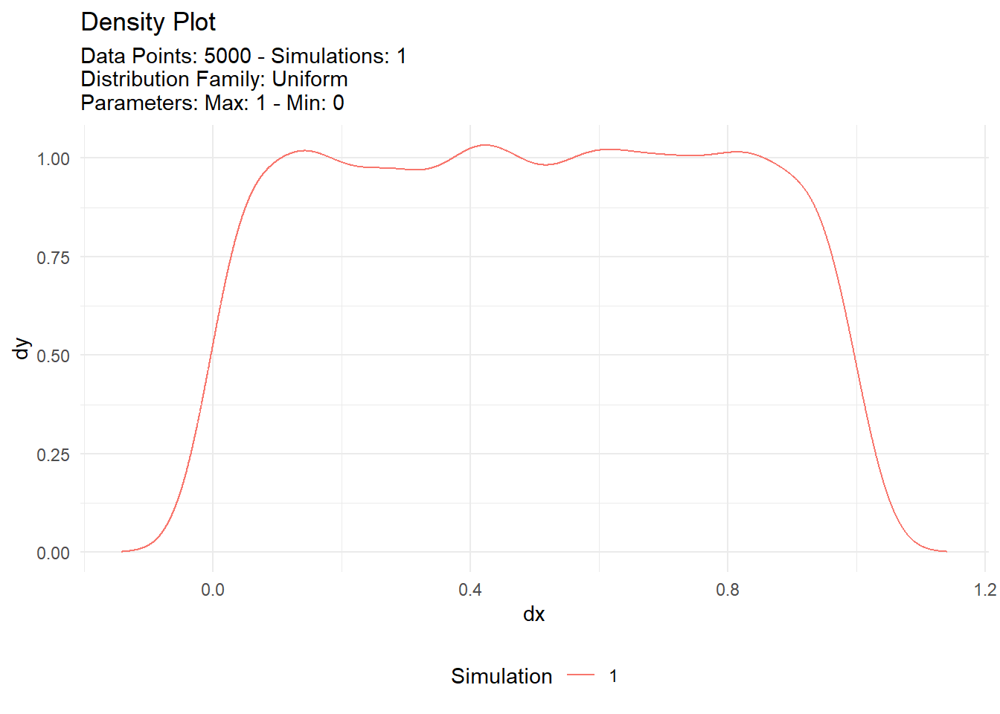
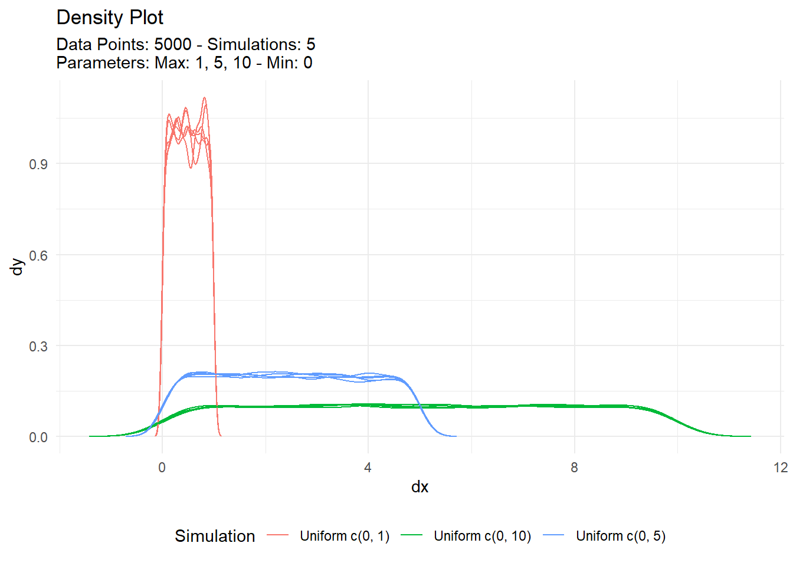

set.seed(123)
r <- runif(10)Introduction
Randomness is an essential part of many statistical and machine learning tasks. In R, there are a number of functions that can be used to generate random numbers, but the runif() function is the most commonly used.
The runif() function
The runif() function generates random numbers from a uniform distribution. A uniform distribution is a distribution in which all values are equally likely. The runif() function takes three arguments:
n: the number of random numbers to generatemin: the lower bound of the distributionmax: the upper bound of the distribution
The default values for min and max are 0 and 1, respectively.
Here is an example of how to use the runif() function to generate 10 random numbers from a uniform distribution between 0 and 1:
Output:
print(r) [1] 0.2875775 0.7883051 0.4089769 0.8830174 0.9404673 0.0455565 0.5281055
[8] 0.8924190 0.5514350 0.4566147The runif() function can also be used to generate random numbers from other distributions, such as the normal distribution, the Poisson distribution, and the binomial distribution.
The punif() function
The punif() function calculates the cumulative probability density function (CDF) of the uniform distribution. The CDF is the probability that a random variable will be less than or equal to a certain value.
The punif() function takes three arguments:
x: the value at which to calculate the CDFmin: the lower bound of the distributionmax: the upper bound of the distribution
Here is an example of how to use the punif() function to calculate the CDF of a uniform distribution between 0 and 1 at the value 0.5:
set.seed(123)
p <- punif(0.5, min = 0, max = 1)Output:
print(p)[1] 0.5This means that there is a 50% chance that a random variable from this distribution will be less than or equal to 0.5.
The dunif() function
The dunif() function calculates the probability density function (PDF) of the uniform distribution. The PDF is the probability that a random variable will be equal to a certain value.
The dunif() function takes three arguments:
x: the value at which to calculate the PDFmin: the lower bound of the distributionmax: the upper bound of the distribution
Here is an example of how to use the dunif() function to calculate the PDF of a uniform distribution between 0 and 1 at the value 0.5:
set.seed(123)
d <- dunif(0.5, min = 0, max = 1)Output:
print(d)This means that the probability of a random variable from this distribution being equal to 0.5 is 1.
The quinf() function
The quinf() function calculates the quantile function of the uniform distribution. The quantile function is the inverse of the CDF. It takes a probability as an input and returns the value that has that probability.
The quinf() function takes two arguments:
p: the probabilitymin: the lower bound of the distributionmax: the upper bound of the distribution
Here is an example of how to use the quinf() function to calculate the quantile of a uniform distribution between 0 and 1 at the probability 0.5:
set.seed(123)
q <- qunif(0.5, min = 0, max = 1)Output:
print(q)[1] 0.5This means that there is a 50% chance that a random variable
If you want to easily see different versions of the uniform distribution then you can either code them out or use the TidyDensity package. Let’s take a quick look.
pacman::p_load(TidyDensity)
n <- 5000
tidy_uniform(.n = n) |>
tidy_autoplot()
With TidyDensity
Now different variations can be visualized with the following workflow:
tidy_multi_single_dist(
.tidy_dist = "tidy_uniform",
.param_list = list(
.n = n,
.min = 0,
.max = c(1,5,10),
.num_sims = 5
)
) |>
tidy_multi_dist_autoplot()
Voila!